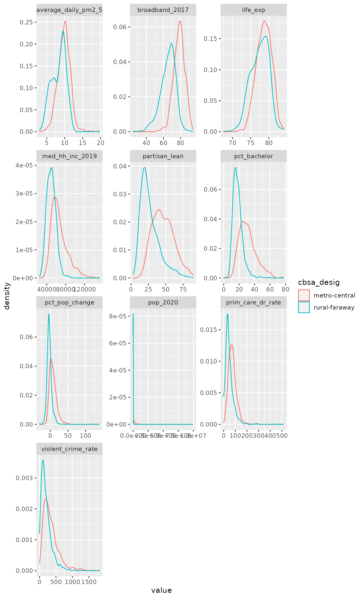

data(retirementLoc)The data may be grouped using the variable cbsa_desig. “CBSA” is an abbreviation for “Core Based Statistic Area” and has been in use since 2000. Of the 3100+ counties in the United States, the Office of Management and Budget classifies 1888 of them into metropolitan and micropolitan statistical areas based on population density. Many of these designated areas consist of an urban core where people work and outlying, adjacent counties where people reside. The US Census Bureau describes the history and criteria on its website.
When these were merged with the retirementLoc dataset, a number of “NA”s were generated. The missing values were assigned the character string rural-faraway. The different areas often have different characteristics and outcomes. For that reason, this vignette was written to draw readers’ attention to this important and useful variable.
df <- retirementLoc %>%
dplyr::filter(cbsa_desig %in% c("metro-central", "rural-faraway")) %>%
select(fips, cbsa_desig, pop_2020, pct_pop_change,
partisan_lean:prim_care_dr_rate) %>%
pivot_longer(!c(fips, cbsa_desig),
names_to = "key",
values_to = "value",
values_drop_na = TRUE)
p <- ggplot(df) +
aes(value, color = cbsa_desig) +
geom_density() +
facet_wrap(vars(key), scales = "free", ncol = 3)
p